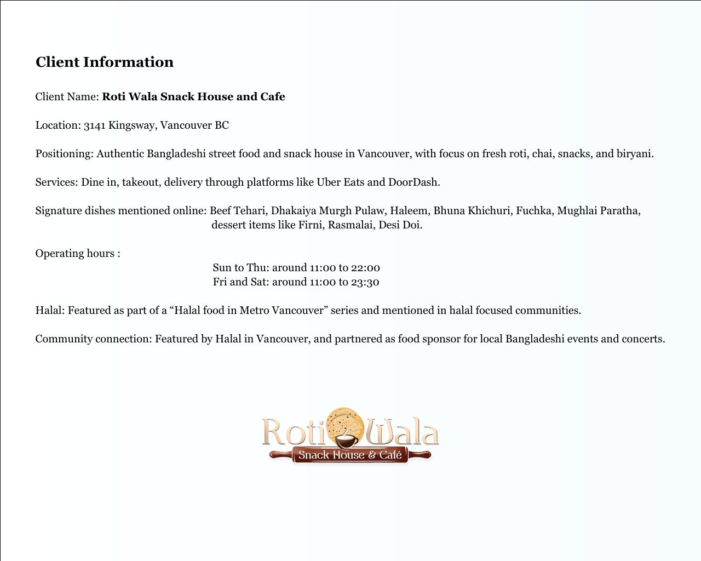
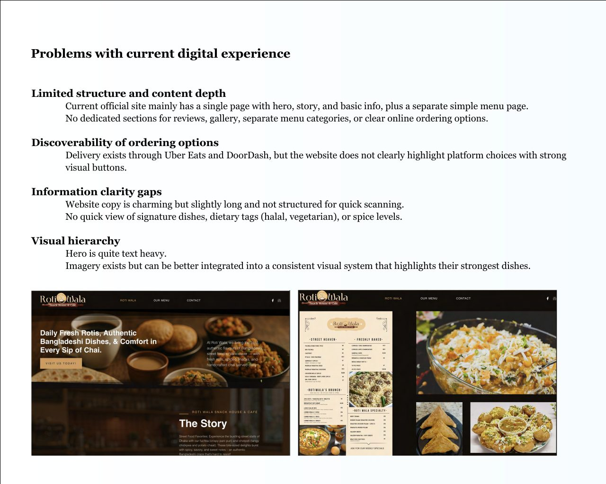
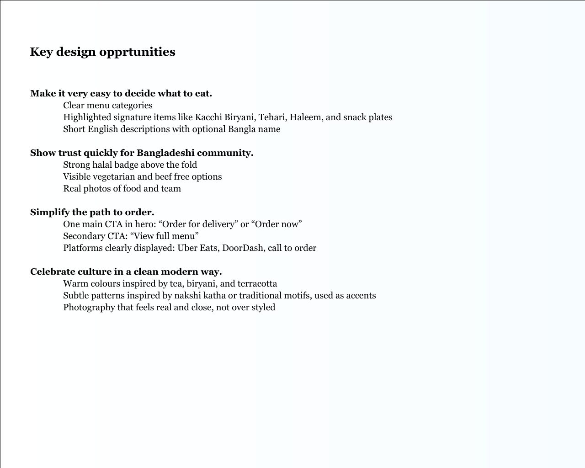
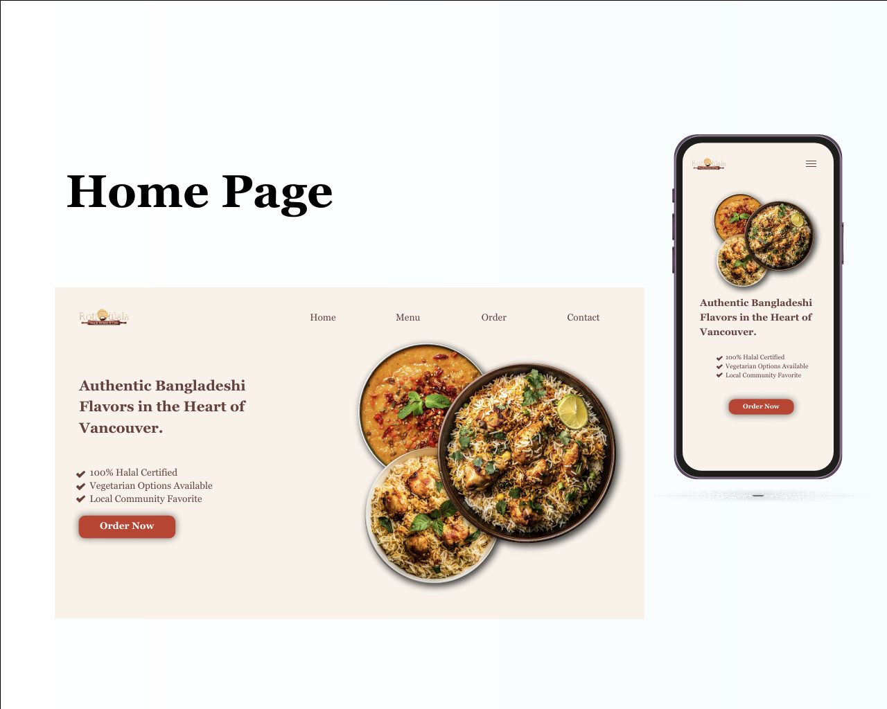
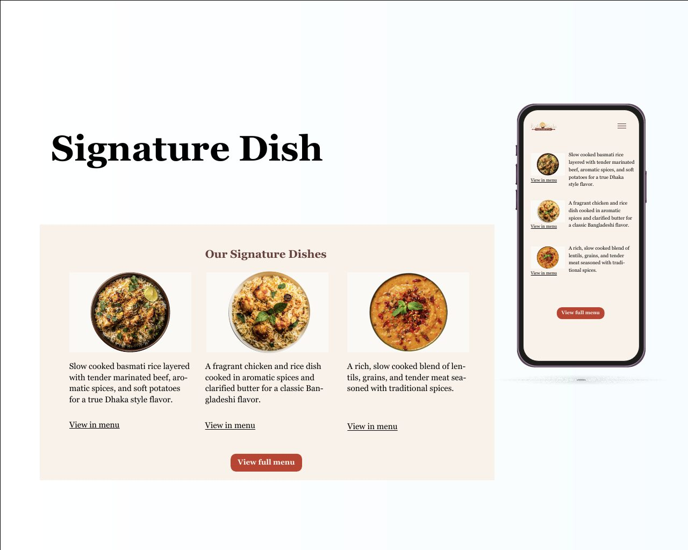
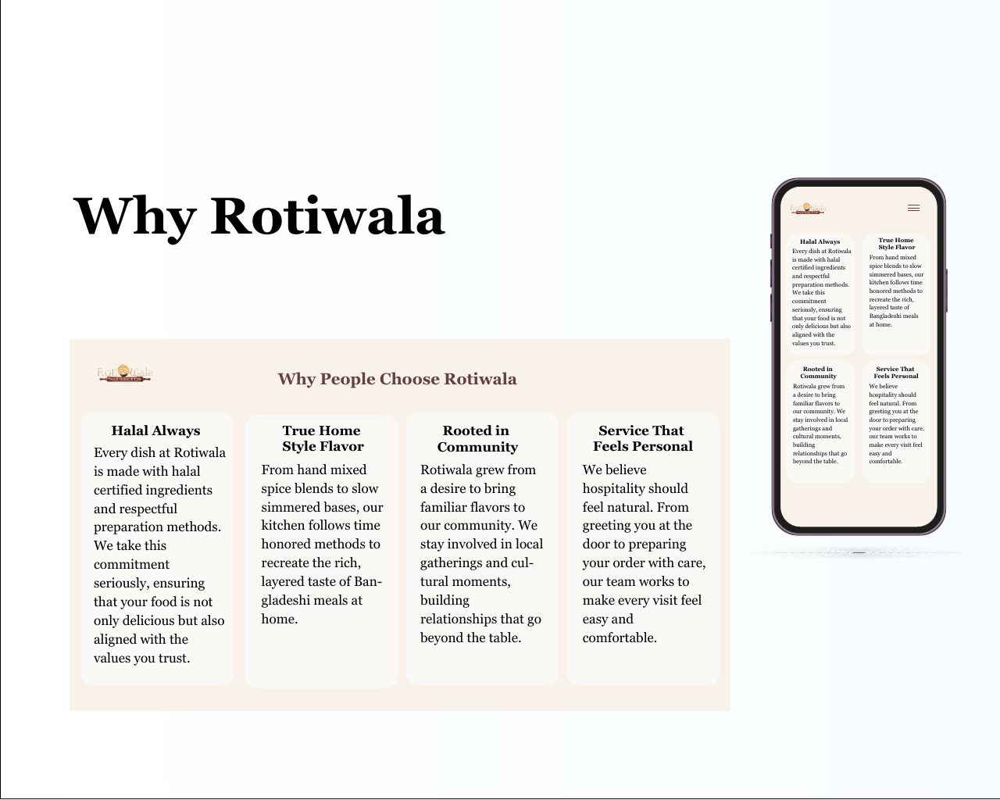
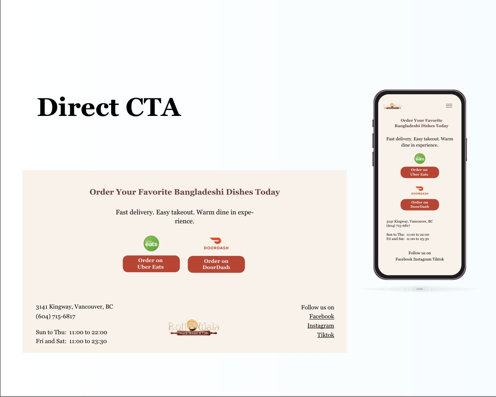

Roti Wala: a website that orders as easily as it reads
Roti Wala Snack House and Café serves authentic Bangladeshi street food on Kingsway, Vancouver. The old site was one long page that buried the menu, the halal assurance, and the ordering links, and it did that to an audience where 72 percent arrive on a phone. This redesign fixed it with research rather than guesswork.
Research and the problem
Analytics showed 2,800 monthly sessions split 72 percent mobile and 23 percent desktop, driven mostly by social media and word of mouth. A survey of 60 Bangladeshi customers in Vancouver revealed what people look for first: menu and prices at 78 percent, location and hours at 67 percent, and halal confirmation at 55 percent.
The existing site delivered none of that quickly. The hero was heavy with text, there were no dietary tags, and the delivery links sat well below the fold.



The redesign
A layout designed for mobile first puts the essentials above the fold: a clear halal badge, vegetarian options, one strong Order Now button, and real photography of the food. Signature dishes such as Kacchi Biryani and Beef Tehari carry short English descriptions, so both the Bangladeshi community and curious food lovers can decide what to eat fast.
Warm colors drawn from tea, biryani, and terracotta celebrate the culture in a clean, modern way, and a section on why people choose Roti Wala carries the halal promise, the cooking method, and the community ties in the restaurant's own voice.



A clear path to order
The ordering section presents Uber Eats and DoorDash side by side with prominent buttons, alongside location, hours, and phone. Every visitor type reaches their goal in one or two taps, whether that is a student ordering after class or a family planning dinner.
